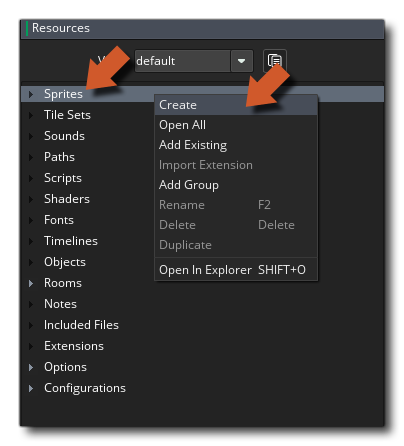
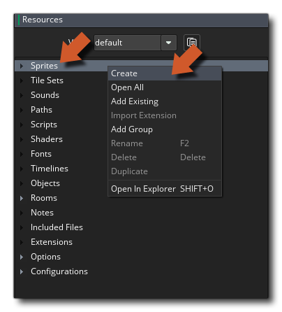
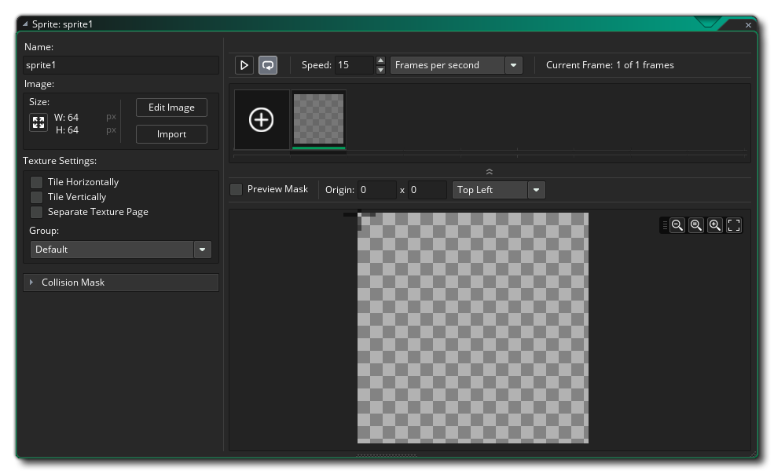
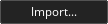
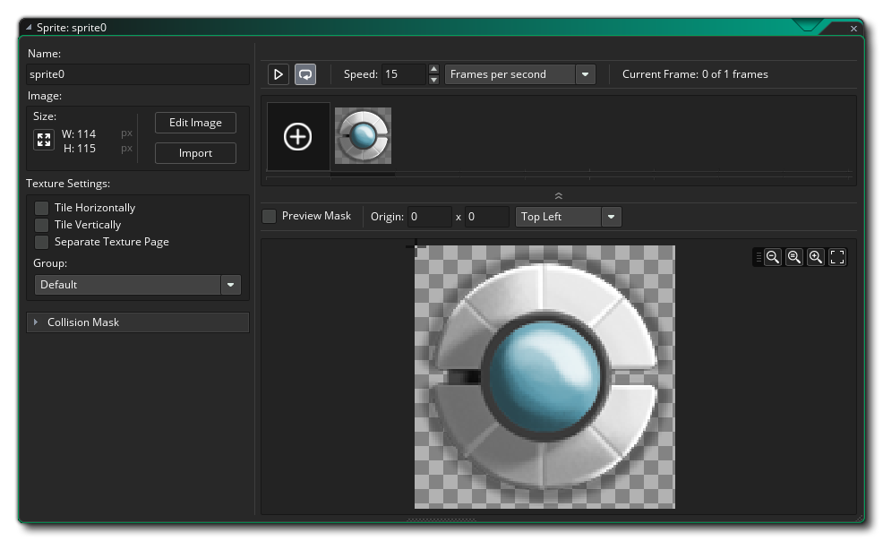
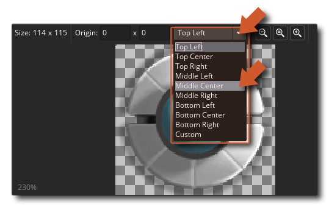
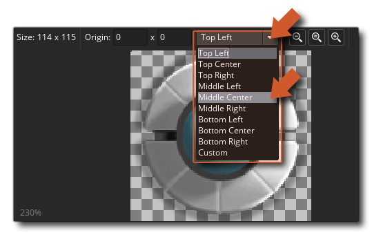

We have our new project and an empty resource tree, so it's time to get started making our game. The aim of this tutorial is to simply get a "player" object onto the screen and moving around, and the first thing we are going to need for that is a Sprite. A sprite is an image that is combined with certain properties which is then used in the game to represent something. In this case we are going to make a sprite to represent our player.
Let's go ahead and create our first sprite resource. Simply click the right mouse button  on the Sprite resource and select Create:

on the Sprite resource and select Create:

This will open the Sprite Editor where we can add an image and set certain properties for the sprite: 
To start with, you need to name the sprite. This name will be the unique identifier for the sprite throughout your game and can be anything you wish, although we recommend that you use some kind of identifier prefix like "spr" or simply "s", as, when you get multiple resource types in your game code, it makes everything far easier to read. So with that in mind, call this sprite "spr_player".
We now need to add an image to the sprite to use as our player. For that we'll use the following image in this tutorial, but you can create your own if you want:
You need to click on the button  to open the file explorer where you can browse for an appropriate image, which must be either PNG, GIF, or JPG format. This tutorial has created a TutorialResources folder for you within the project files, and when you open the file explorer to choose a sprite, it should open on that folder where you can find the sprites used in the "Images" sub-folder. If you have any issues, you can also find the images here.
You will get a warning saying that this action cannot be undone, which is fine since this is a new sprite and we aren't going to over-write anything, so click "Yes" to continue. The Sprite Editor will now look like this: 
The top part of the editor will show a single image, and the main window will have a larger preview. If you add in a sprite animation, the top part will show each individual frame and clicking on them would show that frame in the preview window below, but as we only have one image in the sprite it only shows that image.
Now that we've added an image, we need to set its origin. The origin is simply a point on the sprite that will be used to position it within our game room, and you can set it by either clicking  anywhere on the preview image to set the origin to the mouse position, or using the drop down menu to set a fixed position for it:

anywhere on the preview image to set the origin to the mouse position, or using the drop down menu to set a fixed position for it:

You can see that in the image we indicate Middle Center so select that as the position for the sprite origin. With that done, we are now ready to create an Object Resource which will use our sprite.